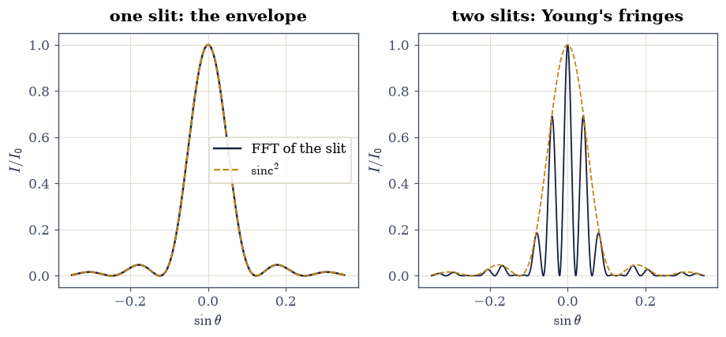
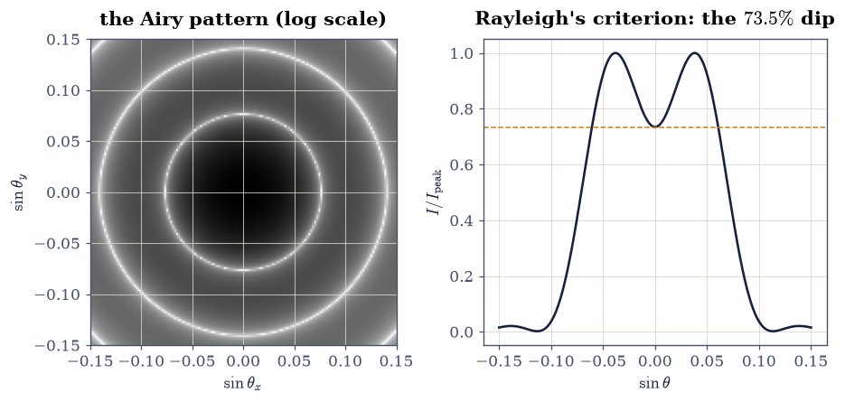
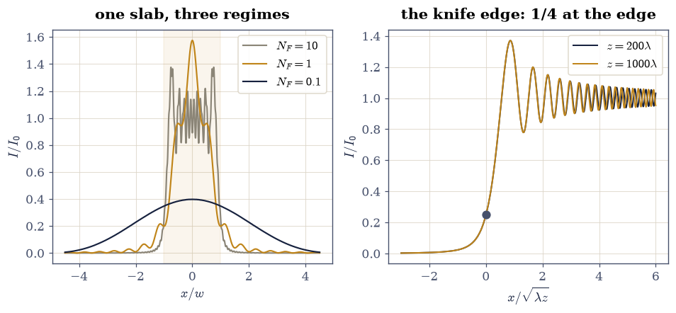
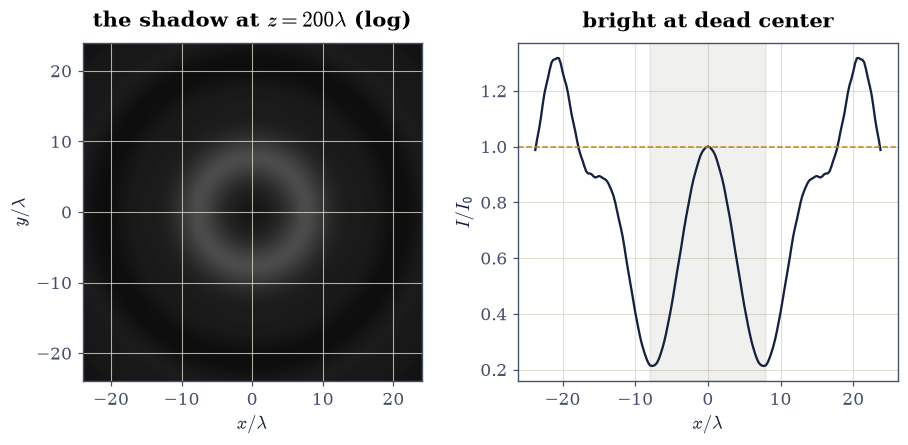
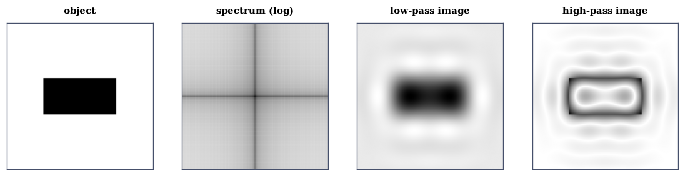

3.14 Wave Optics: Diffraction, Interference, and the Fourier Lens#
Notebook overview#
§3.8 established that light is an
electromagnetic wave; this notebook computes what waves do when
they meet obstacles — which is the subject that decided, between 1801
and 1818, that light is a wave at all. The punchline that organizes
everything: diffraction is a Fourier transform. The far field of
an aperture is the Fourier transform of the aperture; a lens performs
that transform optically, in analog, at the speed of light; and the
FFT of §0.6 is therefore the entire
computational machinery of this notebook. One numpy.fft call
replaces every diffraction integral we meet.
We verify the machinery against every closed form the subject owns — the \(\mathrm{sinc}^2\) single-slit envelope, Young’s \(\cos^2\) fringes, the Airy pattern and Rayleigh’s resolution criterion, the quarter-intensity knife edge — and then spend it on the two showpieces: the Fresnel number’s continuous arc from geometric shadow to Fraunhofer far field, and the Arago spot, the bright point at the dead center of a circular obstacle’s shadow that Poisson derived as a reductio ad absurdum of Fresnel’s theory and Arago promptly observed. Born and Wolf [BW99] and Goodman [Goo05] are the standing references.
A note on reading the checks in this notebook: a validation compares a result to an expected physical fact. A ✗ does not by itself mean the answer is wrong; it means the output did not match what the check expected, which may be a genuine error, a different-but-valid convention, or too tight a tolerance. Treat a ✗ as a prompt to locate the discrepancy. Passing is strong evidence, not proof.
Theory in brief#
Fraunhofer diffraction is a Fourier transform. Huygens’ principle — every point of a wavefront re-radiates — becomes, for an aperture \(A(x)\) illuminated by a plane wave and observed far away, a sum of spherical wavelets whose phases are linear in \(x\): exactly a Fourier integral. The far-field amplitude in direction \(\sin\theta\) is
the aperture’s transform evaluated at spatial frequency \(\sin\theta/\lambda\). Every named pattern follows by transforming a shape: a slit gives \(\mathrm{sinc}\), two slits give \(\cos \times \mathrm{sinc}\), a circle gives the Airy function \(2J_1(u)/u\) with its first dark ring at
— the resolution limit of every telescope, microscope, and camera, and the reason apertures are made large.
The angular spectrum: exact propagation at any distance. Between the aperture and the far field lives Fresnel diffraction, and the clean way to compute it is to decompose the field into plane waves (an FFT), advance each by its own phase, and resum (an inverse FFT):
exact for the scalar wave equation. One subtlety is physics, not numerics: for \(f_x > 1/\lambda\) the square root turns imaginary and the wave is evanescent — it must decay, not propagate. Implement the root as a complex square root and the decay is automatic; clamp it to zero (a tempting shortcut) and sharp edges arrive at the screen haunted by frequencies that should have died in the first wavelength. These are the same decaying exponentials that tunnel through barriers in §6.13, and Eq. 273 itself is the free-flight half of §6.10’s split-step propagator with \(t \to z\): light and wavefunctions ride the same mathematics.
One number rules the regimes. For an aperture of half-width \(w\) observed at distance \(z\), the Fresnel number
counts the Fresnel zones the aperture exposes. \(N_F \gg 1\): geometric optics, a sharp shadow. \(N_F \sim 1\): Fresnel diffraction, edge ringing and on-axis oscillations. \(N_F \ll 1\): the Fraunhofer far field of Eq. 271. One dial, three centuries of optics.
Units: lengths in units of the wavelength \(\lambda = 1\) throughout, so \(\sin\theta\) and spatial frequency are the same number. Everything is deterministic.
Setup#
Data and grids only: the wavelength that fixes the units, a long 1D line for slits and edges, and a 2D plane for circular apertures. This notebook’s own machinery is not here — you write the Fraunhofer transform in Exercise 1, the angular-spectrum propagator in Exercise 3, and its two-dimensional twin in Exercise 4, and every diffraction pattern in the notebook comes out of those three. Nothing here is random.
The Setup below holds this notebook’s data and instruments — nothing you are asked to build. It is collapsed so the building stays yours; expand it whenever you want the details.
Exercise 1 — Young’s experiment, by Fourier transform#
The 1801 experiment that started it all, run as Eq. 271 says: transform the aperture. The specimens are a single slit of width \(a = 8\lambda\) and a pair of such slits separated by \(d = 24\lambda\), and each has a closed form waiting for the FFT to land on: the slit gives the envelope \(\mathrm{sinc}^2(a_{\rm eff}\sin\theta/\lambda)\) with its first zero at \(\lambda/a_{\rm eff}\), the pair multiplies that envelope by \(\cos^2(\pi d\sin\theta/\lambda)\) fringes of spacing \(\lambda/d\). Here \(a_{\rm eff}\) is the width the sampled grid actually contains (\(n_{\rm px}\,\Delta x\), one pixel more than \(a\) because both edge samples are inside), and the \(1\%\) it sits away from the textbook \(\lambda/a\) is exactly the pixelization the lesson of §0.1 predicts: the FFT diffracts the aperture you sampled, not the one you meant.
Part a) Write fraunhofer(aperture, dx), the far field of
Eq. 271 in a single FFT. Move the aperture’s centre to
index \(0\) first (numpy.fft.ifftshift), transform it
(numpy.fft.fft), and shift the zero frequency back to the middle
(numpy.fft.fftshift), so the pattern comes out centred and real-symmetric
for a symmetric aperture rather than wrapped and phase-twisted; return the
directions \(\sin\theta = \lambda f_x\) read off numpy.fft.fftfreq together
with the intensity \(|U|^2\) normalized to its peak. Write this one
yourself — the implementation is the lesson, and every Fraunhofer pattern
in this notebook comes out of it.
Part b) Certify it on the single slit: compare the far field to
\(\mathrm{sinc}^2(a_{\rm eff}\sin\theta/\lambda)\) to atol=1e-2 over
\(|\sin\theta| < 0.4\), then locate the first zero by minimizing a cubic
interpolant of the pattern (scipy.optimize.minimize_scalar) and verify it
sits at \(\lambda/a_{\rm eff}\) to rtol=1e-4, and within \(1\%\) of
\(\lambda/a\).
Part c) Turn it on the two slits. Verify the pattern is
\(\cos^2\) fringes under the \(\mathrm{sinc}^2\) envelope (atol=1e-2). Then
measure the fringe spacing — carefully, because there is a trap worth a
validation of its own: the raw intensity maxima are pulled inward
by the envelope’s slope (a product’s peak is not the factor’s peak),
by about \(4\%\) for slits this wide. Verify the pull is there (first
raw peak below \(\lambda/d\)), then divide the envelope out and verify
the underlying fringes sit at exactly \(\lambda/d\) spacing
(rtol=1e-3). Two numbers — envelope from the slit, fringes from
the pair — and Young could read \(\lambda\) off a wall.
single slit: max |I - sinc²| = 2.00e-05
first zero 0.124031; λ/a_eff = 0.124031, λ/a = 0.125000
double slit: max |I - cos²·sinc²| = 1.64e-05
first RAW peak 0.04004 vs λ/d = 0.04167 (envelope pull 3.9%)
envelope-corrected fringe spacing 0.041687 (λ/d = 0.041667)

Fig. 295 Diffraction as a Fourier transform, verified: the single-slit far field (left, ink) lying on its \(\mathrm{sinc}^2\) closed form (amber, dashed) with the first zero at \(\lambda/a_{\rm eff}\), and the double-slit pattern (right) as \(\cos^2\) fringes of spacing \(\lambda/d\) riding under the same envelope. One FFT of the aperture replaces the diffraction integral; the \(0.8\%\) shift of the measured zero from the textbook \(\lambda/a\) is the sampled aperture’s extra pixel, not an error in the optics.#
✓ the FFT of a slit IS the sinc² pattern: Fraunhofer diffraction as a Fourier transform, to a percent everywhere [max deviation 2.0e-05]
✓ the first dark fringe sits at λ/a_eff of the SAMPLED aperture — within 1% of the textbook λ/a, the gap being one pixel of aperture width [got [0.12403078] vs expected [0.12403101] (rtol=0.0001, atol=1e-09)]
✓ (and indeed within that 1% of λ/a itself: the FFT diffracts the aperture you sampled, not the one you meant) [offset 0.7754%]
✓ two slits give cos² fringes under the same envelope: interference times diffraction, as the transform of a pair demands [max deviation 1.6e-05]
✓ the trap, confirmed: the raw intensity maxima are pulled inward of mλ/d by the envelope's slope — a product's peak is not the factor's peak [first raw peak 0.04004 < λ/d = 0.04167]
✓ and with the envelope divided out, the fringes sit at exactly λ/d: the number Young read a wavelength from, two centuries ago [got [0.04168701] vs expected [0.04166667] (rtol=0.001, atol=1e-09)]
True
Exercise 2 — The Airy pattern and the resolution of telescopes#
In two dimensions the circular aperture rules, and its transform is the Airy pattern — the point-spread function of every round lens and mirror ever built.
Part a) Transform a circular aperture of diameter \(d = 16\lambda\)
on the 2D grid (numpy.fft.fft2) and verify the axis cut against
the closed form \([2 J_1(u)/u]^2\), \(u = \pi d \sin\theta/\lambda\)
(scipy.special.j1, atol=5e-3), with the first dark ring at
Eq. 272’s \(1.22\,\lambda/d\) to rtol=5e-3.
Part b) Rayleigh’s criterion. Two incoherent point sources
(their intensities add) separated by exactly \(1.22\,\lambda/d\) —
one source’s peak on the other’s first dark ring. Verify the summed
profile still shows two peaks with a central dip of \(73.5\%\) of the
maximum (rtol=1e-2): the conventional edge of “resolved,” and the
reason every gain in telescope aperture is a gain in what can be
seen.
Airy axis cut vs closed form: max |ΔI| = 8.71e-04
first dark ring at 0.076141 (1.22 λ/d = 0.076250)
Rayleigh dip/peak = 0.7346 (classic 0.735)

Fig. 296 The circular aperture’s far field. Left: the Airy pattern of a \(d = 16\lambda\) aperture (logarithmic gray scale), the ring structure that every star image in every telescope carries. Right: two incoherent point sources separated by Rayleigh’s \(1.22\,\lambda/d\) — one peak sitting on the other’s first dark ring — summing to a double-humped profile whose central dip reaches \(73.5\%\) of the peaks: barely, conventionally, resolved.#
✓ the 2D FFT of a circle is the Airy pattern, ring for ring [max deviation 8.7e-04]
✓ with the first dark ring at 1.22 λ/d: the diffraction limit of every round aperture [got [0.07614138] vs expected [0.07625] (rtol=0.005, atol=1e-09)]
✓ and two incoherent sources at exactly that separation dip to 73.5% between their peaks: Rayleigh's edge of resolved [got [0.73459407] vs expected [0.735] (rtol=0.01, atol=1e-09)]
True
Exercise 3 — The Fresnel number’s arc, and the knife edge#
Between the aperture and the far field, Eq. 273 propagates exactly, and Eq. 274 predicts what each distance shows — once there is something to propagate with.
Part a) Write propagate(u0, dx, z), the angular-spectrum propagator
of Eq. 273: transform the field to its plane-wave content
(numpy.fft.fft), advance each spatial frequency \(f_x\) by its own phase
\(e^{2\pi i z\sqrt{1/\lambda^2 - f_x^2}}\), and transform back. The whole
exercise hangs on one line of it: take that square root as a complex
root (cast the radicand with .astype(complex)), so that the frequencies
beyond \(1/\lambda\) come out imaginary and decay as the evanescent waves
they are. Write this one yourself — the implementation is the lesson,
and the knife edge of Part c) is built to catch the version that clamps the
root to zero instead.
Part b) Propagate a slab of half-width \(w = 20\lambda\) to the
distances where \(N_F = 10, 1, 0.1\). Verify the arc: at \(N_F = 10\) the
profile is still essentially the geometric shadow (on-axis intensity
within \(12\%\) of unity, energy overwhelmingly inside the slab); at
\(N_F = 1\) the on-axis intensity has swung to \(1.588\)
(rtol=2e-2) — brighter behind the middle of the aperture than
with no aperture at all, pure Fresnel-zone interference; at
\(N_F = 0.1\) the light has left geometry behind (on-axis below
\(0.5\), the pattern relaxing toward Fraunhofer).
Part c) The knife edge — diffraction’s cleanest exact numbers.
Propagate a half-plane screen and verify, at two distances: the
intensity at the geometric shadow’s edge is exactly \(1/4\) of the
incident (atol=0.005) — half the amplitude, squared; the first
bright fringe overshoots to \(1.370\) (rtol=1e-2); and the deep
shadow is dark (\(I < 0.05\) three Fresnel scales in). This is the
fringe pattern visible at the edge of every real shadow, and the
\(1/4\) is the number that certifies the complex square root of
Part a): clamp it to zero and this validation is the one that fails.
N_F = 10: z = 40.0, on-axis 0.8902, energy inside 0.989
N_F = 1: z = 400.0, on-axis 1.5746, energy inside 0.916
N_F = 0.1: z = 4000.0, on-axis 0.3983, energy inside 0.460
knife z = 200: edge 0.2484, overshoot 1.3698, deep shadow 2.76e-03
knife z = 1000: edge 0.2493, overshoot 1.3712, deep shadow 2.69e-03

Fig. 297 The Fresnel number’s arc and the knife edge. Left: a \(40\lambda\) slab propagated to \(N_F = 10\) (near-geometric shadow with edge ripples), \(N_F = 1\) (Fresnel-zone interference, on-axis intensity \(1.57\) — brighter than no aperture at all), and \(N_F = 0.1\) (relaxing toward the far field). Right: the knife-edge pattern at two distances, rescaled to the Fresnel length \(\sqrt{\lambda z}\) — the profiles collapse onto one universal curve with exactly \(1/4\) intensity at the geometric edge (dot) and a \(1.37\) first overshoot: the fringes at the edge of every real shadow.#
✓ at N_F = 10 geometry still rules: on-axis near unity, the energy still inside the slab's shadow-to-be [on-axis 0.890, inside fraction 0.989]
✓ at N_F = 1 the axis is BRIGHTER than with no aperture at all — Fresnel-zone interference, geometry's first open failure [got [1.5746487] vs expected [1.588] (rtol=0.02, atol=1e-09)]
✓ and at N_F = 0.1 the light has left the aperture's geometry behind, relaxing toward the Fraunhofer far field [on-axis 0.398]
✓ the knife edge shows exactly 1/4 intensity at the geometric shadow's edge, at both distances: half the amplitude, squared — and the check that catches a clamped evanescent root [edges [0.2484, 0.2493]]
✓ with the universal 1.37 first overshoot and a genuinely dark deep shadow: every real shadow's edge, quantified [overshoots [1.3698, 1.3712]]
True
Exercise 4 — Babinet’s principle and the Arago spot#
Two of wave optics’ most counterintuitive theorems, both one-liners in the Fourier picture. The second of them lives in two dimensions, on a disk, so it needs the propagator of Exercise 3 carried into the plane.
Part a) Write propagate2d(u0, dxy, z), the two-dimensional twin of
the propagate you wrote in Exercise 3: the same complex square root, now
over the radial spatial frequency \(\sqrt{f_x^2 + f_y^2}\) assembled with
numpy.meshgrid from a single numpy.fft.fftfreq axis, and
numpy.fft.fft2 / ifft2 in place of the 1D pair. Write this one
yourself — the implementation is the lesson, and a transposed frequency
grid is the classic way to lose the symmetry the Arago spot depends on.
Part b) Babinet: a screen and its complement (opaque where the
screen is open, open where it is opaque) diffract identically
everywhere off the forward direction, because their amplitudes sum
to the unobstructed beam — which lives entirely in the forward spike.
Verify it on the \(w = 20\lambda\) slab of Exercise 3 and its complement,
at machine precision on the discrete grid (the direction axis from your
Exercise 1 fraunhofer): off the axis the slit’s and the anti-slit’s
far-field intensities agree to \(10^{-10}\), while on axis the complement
dominates by more than \(10^4\) (it transmits almost the whole window).
Part c) The Arago spot. In 1818 Poisson computed, from Fresnel’s
wave memoir, that the exact center of a circular obstacle’s shadow
should be bright — intended as the theory’s death blow. Arago did
the experiment; the spot is there; the wave theory won the prize.
Reproduce the verdict: propagate the field past an opaque disk of
diameter \(16\lambda\) with your propagate2d (adding a soft super-Gaussian
window absorber so the periodic grid edges stay quiet), normalize by
the identically propagated unobstructed beam, and verify the on-axis
intensity
at \(z = 100, 200, 400\lambda\) equals the unobstructed beam’s to
within \(5\%\) — every rim point is equidistant from the axis, so the
wavelets arrive in phase, at any distance. The center of the shadow
is as bright as no shadow at all.
Babinet off-axis relative gap: 0.00e+00
axis ratio complement/slit: 4.140e+04
Arago z = 100: I_axis / I_unobstructed = 0.9945
Arago z = 200: I_axis / I_unobstructed = 1.0005
Arago z = 400: I_axis / I_unobstructed = 1.0061

Fig. 298 The Arago spot, the 1818 verdict for the wave theory: the intensity \(200\lambda\) behind an opaque disk of diameter \(16\lambda\) (left, logarithmic scale) shows a bright point at the exact center of the geometric shadow, where every rim wavelet arrives in phase; the axis cut (right) puts it at the unobstructed beam’s intensity to within a few percent, inside a shadow that is otherwise dark. Poisson derived it as an absurdity, Arago observed it, and the corpuscular theory never recovered.#
✓ Babinet, at machine precision: screen and anti-screen diffract identically off-axis, differing only in the forward spike that carries the beam [off-axis gap 0.0e+00, axis ratio 4.1e+04]
✓ and Poisson's absurdity is real at all three distances: the center of the disk's shadow is as bright as no disk at all — the Arago spot, the wave theory's 1818 verdict [max|Δ| = 0.00605548 (rtol=0.05, atol=1e-09)]
True
Exercise 5 — The lens as an analog Fourier transformer#
A converging lens placed one focal length from an object produces, one focal length behind it, the object’s exact Fourier transform — in amplitude and phase, in analog, at the speed of light [Goo05]. Put a mask in that focal plane and a second lens after it (the “\(4f\) system”), and you are editing the object’s spectrum by hand: optical information processing, decades before electronic computers could hold an image.
Part a) Simulate the \(4f\) system on a bright bar (\(120\lambda \times 60\lambda\)): forward FFT to the focal plane, apply a mask, inverse FFT to the image plane. Verify the exact identities the optics inherits from §0.6: an open mask returns the object to \(10^{-12}\); the spectrum’s energy splits exactly (Parseval) into the low-pass and high-pass masks’ shares; a pinhole mask passing only the DC term produces a perfectly uniform image at the object’s mean.
Part b) Filter. Verify the low-pass image (frequencies below \(0.02/\lambda\)) has its sharpest gradient reduced more than \(5\times\) — edges are high-frequency, so removing high frequencies blurs — while the high-pass image has exactly zero mean (its DC is in the other mask) and lights up along the object’s edges. This is how a phase-contrast microscope, a spatial filter on a laser bench, and every “sharpen” button ever shipped all work: they are masks in a Fourier plane.
open mask: max |image - object| = 6.67e-16
Parseval split gap: 2.54e-16
DC-only: max |image - mean| = 0.00e+00
gradient: object 0.707, low-pass 0.0107 (ratio 66.0); high-pass mean 1.9e-19

Fig. 299 The \(4f\) optical Fourier processor on a bright bar: the object (far left), its focal-plane spectrum (log scale — the separable \(\mathrm{sinc}\) structure of a rectangle), the low-pass image (edges blurred: their high frequencies were physically blocked in the focal plane), and the high-pass image (only the edges survive, and the mean is exactly zero). Every spatial filter, phase-contrast microscope, and sharpening algorithm is a mask in this plane.#
✓ the 4f system with an open mask returns the object exactly, and a DC pinhole returns its uniform mean: the lens really computes the transform of §0.6 [open 6.7e-16, DC 0.0e+00]
✓ the focal-plane masks split the object's energy exactly (Parseval): nothing is lost between the optical and the numerical transform [split gap 2.5e-16]
✓ blocking high frequencies blurs the sharpest edge more than fivefold, while the high-pass image carries exactly zero mean: edges LIVE at high spatial frequency [gradient ratio 66.0, hp mean 1.9e-19]
True
Notebook summary#
One FFT reproduced the \(\mathrm{sinc}^2\) single-slit pattern to a percent with its first zero at \(\lambda/a_{\rm eff}\) to \(10^{-4}\) (and within \(1\%\) of the textbook \(\lambda/a\) — the gap being one pixel of sampled aperture), and Young’s \(\cos^2\) fringes at spacing \(\lambda/d\).
The circular aperture’s transform was the Airy pattern with its dark ring at \(1.22\,\lambda/d\), and two incoherent sources at that separation dipped to \(73.5\%\): Rayleigh’s criterion, measured.
The Fresnel number walked one slab from geometric shadow (\(N_F = 10\)) through zone interference (\(N_F = 1\), on-axis \(1.57\)) toward the far field (\(N_F = 0.1\)); the knife edge showed exactly \(1/4\) at the geometric edge and the universal \(1.37\) overshoot — after the evanescent square root was implemented as the complex root it is.
Babinet held at machine precision off-axis, and the Arago spot — Poisson’s intended absurdity — sat at the unobstructed intensity within \(5\%\) at all three distances.
The \(4f\) system computed exact transforms (open mask \(10^{-16}\), Parseval split exact), and focal-plane masks blurred or extracted edges: the lens as the analog ancestor of §0.6.
Outlook#
Coherence. Everything here assumed perfectly coherent light; real sources are partially coherent, and fringe visibility measures it — the van Cittert–Zernike theorem turns that into stellar interferometry, sizing stars from fringe contrast [BW99].
Holography. Record the focal- or image-plane phase (by interfering with a reference beam) and the full field can be reconstructed: the \(4f\) system’s masks generalized to recorded wavefronts.
Adaptive optics. Atmospheric turbulence corrugates the phase that Eq. 273 propagates; deformable mirrors flatten it in real time, which is why ground telescopes reach the \(1.22\,\lambda/d\) limit Exercise 2 set.
The quantum handshake. The angular spectrum is §6.10’s free propagator and the evanescent tail is §6.13’s tunneling wave; single photons sent one at a time through Exercise 1’s two slits still build the \(\cos^2\) pattern — the experiment that opens quantum mechanics, with this notebook’s classical pattern as its envelope.
References#
Max Born and Emil Wolf. Principles of Optics: Electromagnetic Theory of Propagation, Interference and Diffraction of Light. Cambridge University Press, 7 edition, 1999. doi:10.1017/CBO9781139644181.